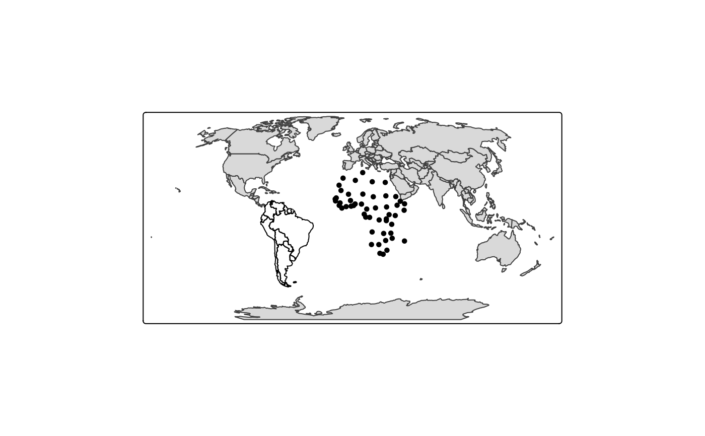

Creates a tmap-element that draws simple features. Basically, it is a stack of tm_polygons, tm_lines and tm_dots. In other words, polygons are plotted as polygons, lines as lines and points as dots.
Usage
tm_sf(
col = NA,
size = 0.02,
shape = 19,
lwd = 1,
lty = "solid",
alpha = NA,
palette = NULL,
border.col = NA,
border.lwd = 1,
border.lty = "solid",
border.alpha = NA,
group = NA,
...
)Arguments
- col
color of the simple features. See the
colargument oftm_polygons,tm_linesandtm_symbols.- size
size of the dots. See the
sizeargumenttm_symbols. By default, the size is similar to dot size (seetm_dots)- shape
shape of the dots. See the
shapeargumenttm_symbols. By default, dots are shown.- lwd
width of the lines. See the
lwdargument oftm_lines- lty
type of the lines. See the
ltyargument oftm_lines- alpha
transparency number. See
alphaargument oftm_polygons,tm_linesandtm_symbols- palette
palette. See
paletteargument oftm_polygons,tm_linesandtm_symbols- border.col
color of the borders. See
border.colargument oftm_polygonsandtm_symbols.- border.lwd
line width of the borders. See
border.lwdargument oftm_polygonsandtm_symbols.- border.lty
line type of the borders. See
border.lwdargument oftm_polygonsandtm_symbols.- border.alpha
transparency of the borders. See
border.alphaargument oftm_polygonsandtm_symbols.- group
name of the group to which this layer belongs in view mode. Each group can be selected or deselected in the layer control item. Set
group = NULLto hide the layer in the layer control item. By default, it will be set to the name of the shape (specified intm_shape).- ...
other arguments passed on to
tm_polygons,tm_linesandtm_symbols
Examples
data(World)
World$geometry[World$continent == "Africa"] <-
sf::st_centroid(World$geometry[World$continent == "Africa"])
World$geometry[World$continent == "South America"] <-
sf::st_cast(World$geometry[World$continent == "South America"],
"MULTILINESTRING", group_or_split = FALSE)
tm_shape(World) +
tm_sf()
